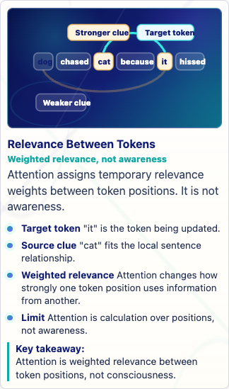
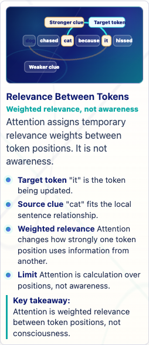
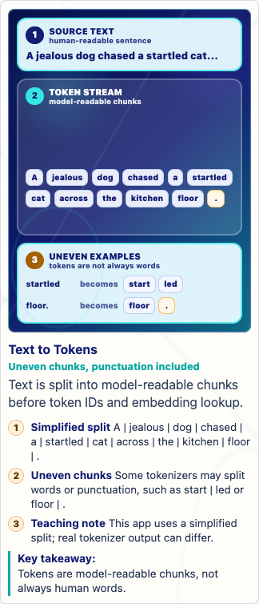
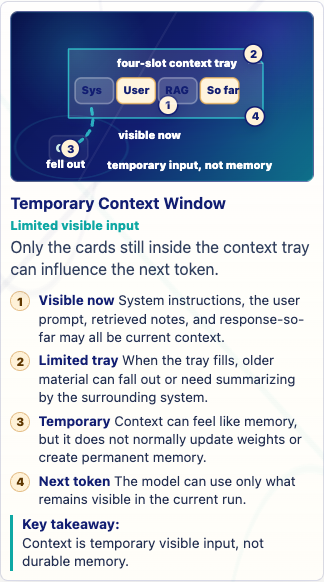
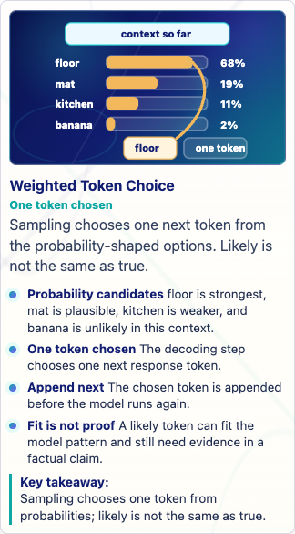
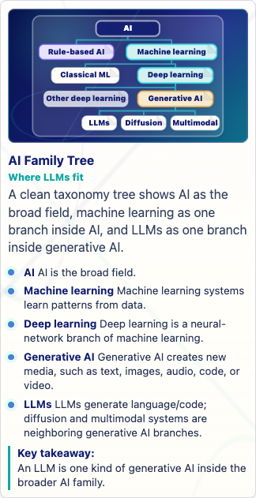
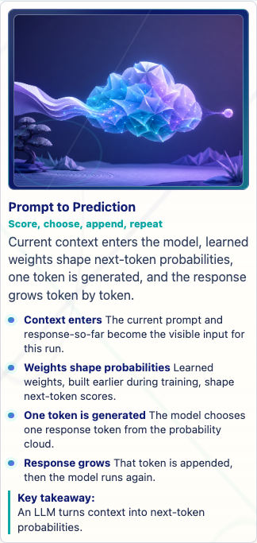
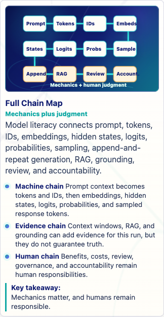
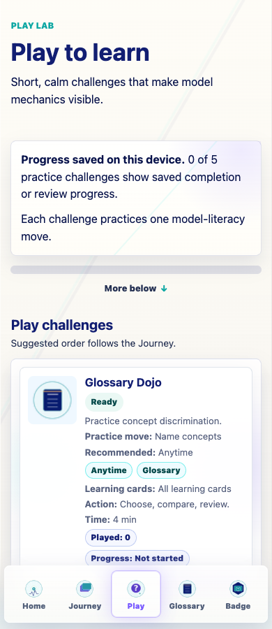
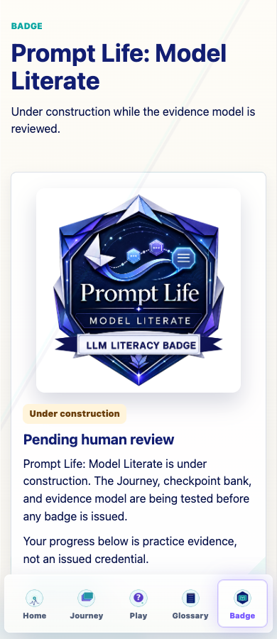

Prompt Life v0.28.0 Visual Aid Readiness Pass
Generated June 13, 2026. This packet wraps the final response and representative screenshots for the Journey visual-aid human-testing pass.
39visual aids reviewed
18P0/P1 before
0P0/P1 after
6templates used
Summary
- Added six canonical visual templates to the style guide.
- Scored all 39 Journey visual aids using a seven-part human-readability rubric.
- Marked 13 visuals as temporary but acceptable for small human testing.
- Created the full visual-aid human-test review PDF and feedback sheet PDF.
- Updated
audit:visual-aidsto catch readiness issues, not just marker mismatches. - Bumped the app/package version to
0.28.0.
Template Distribution
- Atmospheric Scene: 9
- Taxonomy Map: 6
- Comparison Board: 8
- Mechanism Flow: 9
- Probability Bars: 3
- Context Tray / Stack: 4
Human-Testing Watch List
- Full Chain Map (24/35): This is the top later-coded redesign candidate; testers should flag overload.
- Borrowed Flames (25/35): Avoid cramming source labels; social meaning belongs in callouts.
- Cost Ledger (25/35): No fake statistics; keep categories in HTML.
- Benefit Tiers (25/35): Avoid implying all benefits are proven or automatic.
- Accountability Flow (25/35): Avoid generic AI-person imagery that implies the model has agency.
- Learning Modes Matrix (26/35): Watch whether matrix labels feel too small at 320px.
- Media Lane Map (26/35): Reduce nodes later if testers call it busy.
- Better-AI Control Panel (26/35): Panel may feel dense; testers should flag unreadable lever labels.
- Fine-Tuning Path (27/35): Tester should check whether the metaphor needs a stronger coded comparison later.
- Feature Vector (27/35): Distributed side may feel abstract; tester feedback should guide simplification.
Representative Screenshots









